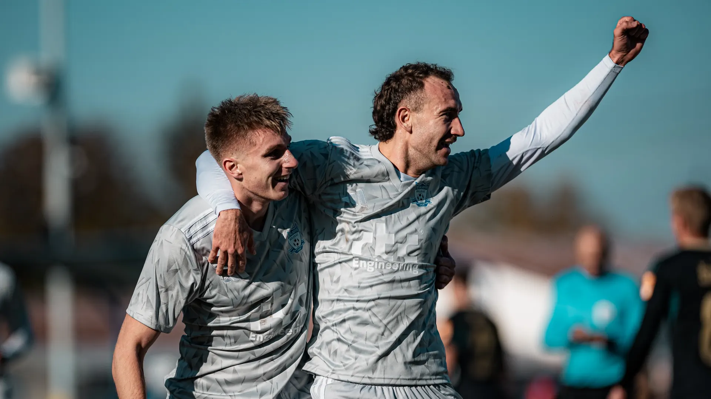
IV. liga – Majstrovstvá regiónu · sezóna 2026/27
Jeseň na 2. mieste
9 výhier, 5 remíz a 1 prehra v lige, skóre 37:15. Jar sa začína v sobotu 6. marca zápasom doma proti FC Pata.
Posledné zápasy
Všetky výsledky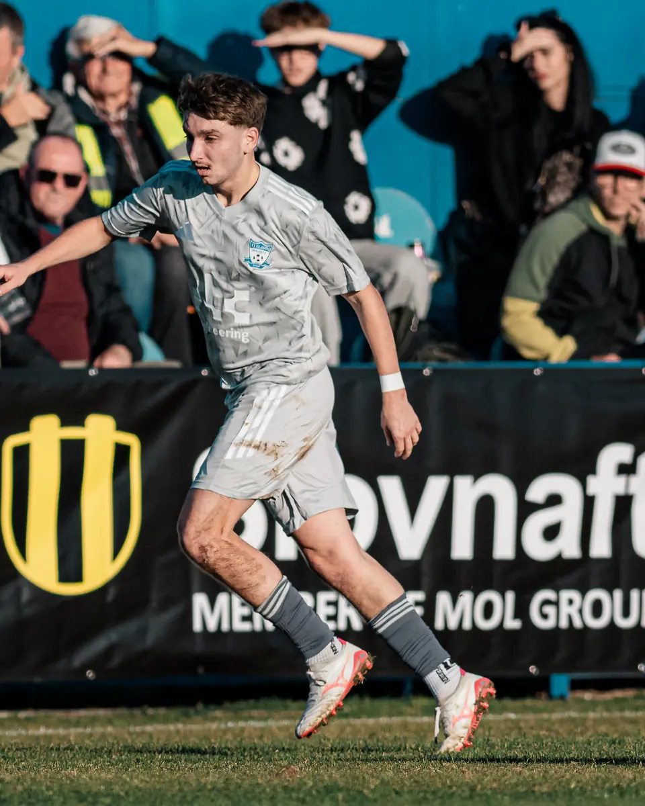
IV. liga – Majstrovstvá regiónu 2–2
2–2 Stano 19′
Stano 19′Martinka 71′Jánošík 57′, 75′ 14. NOVEMBRA 2026 | doma
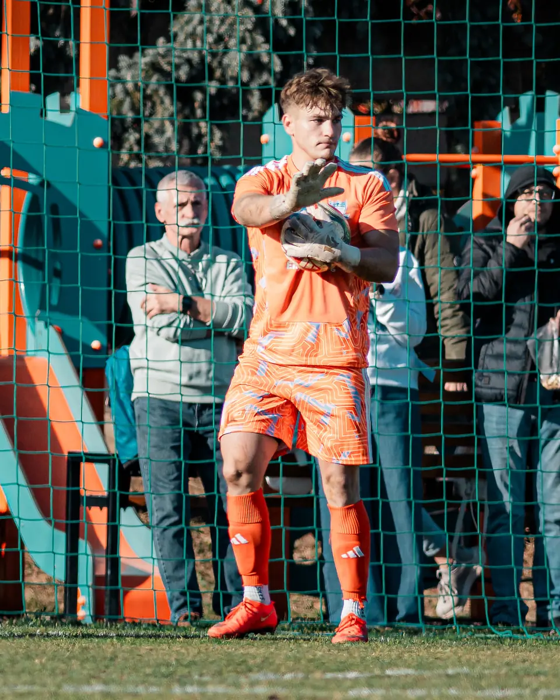
IV. liga – Majstrovstvá regiónu 0–3
Škultéty 67′ (vl.)Dibala 4′Martinka 14′ 7. NOVEMBRA 2026 | vonku
 Slovnaft Cup
1–3
Slovnaft Cup
1–3 Stano 10′Pudhorocký 69′
Stano 10′Pudhorocký 69′Potočný 77′, 84′ 4. NOVEMBRA 2026 | doma
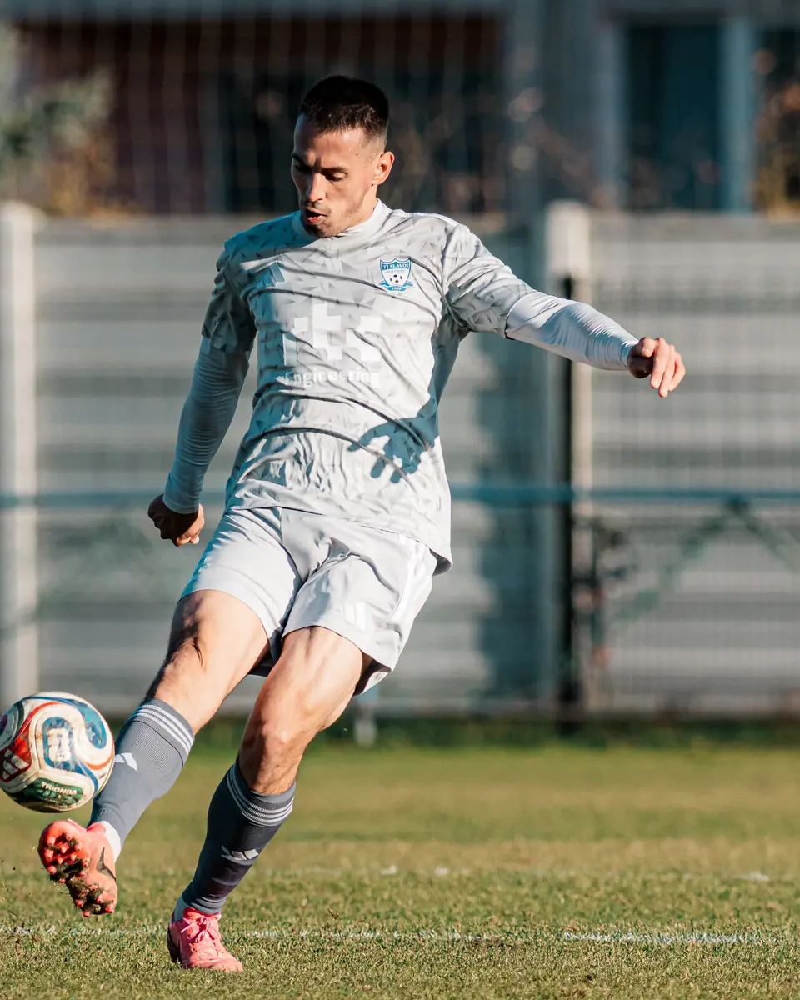
IV. liga – Majstrovstvá regiónu3–1 Dibala 3′, 26′
Dibala 3′, 26′Stano 83′Svatík 6′ 31. OKTÓBRA 2026 | doma
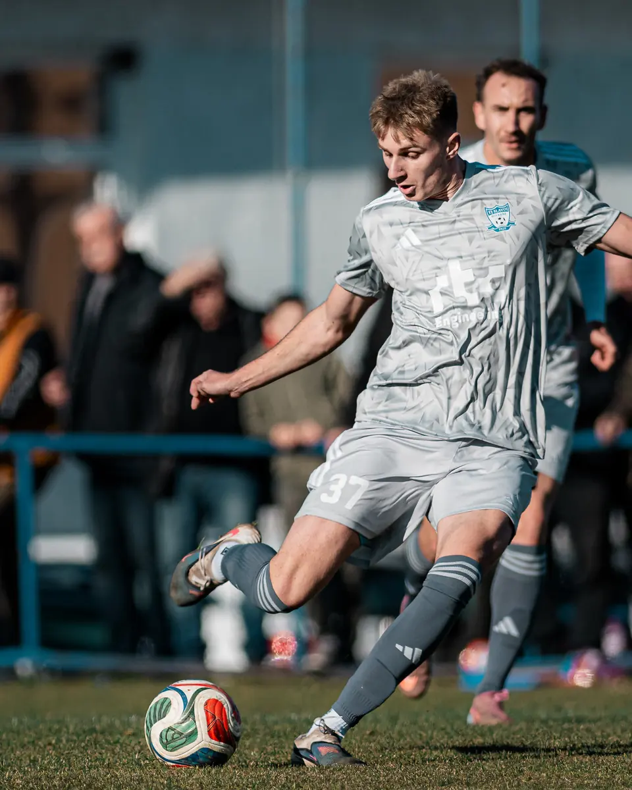
IV. liga – Majstrovstvá regiónu 6. MARCA 2027 | 14:30
Slavoj Boleráz
6. MARCA 2027 | 14:30
Slavoj Bolerázvs FC Pata
IV. liga – Majstrovstvá regiónu
Celá tabuľka| Poradie | Tím | Z | V | R | P | Skóre | B |
|---|---|---|---|---|---|---|---|
| 1 | 15 | 11 | 2 | 2 | 37:11 | 35 | |
| 2 | 15 | 9 | 5 | 1 | 37:15 | 32 | |
| 3 | 15 | 9 | 3 | 3 | 21:11 | 30 | |
| 4 | 15 | 8 | 2 | 5 | 32:28 | 26 | |
| 5 | 15 | 7 | 4 | 4 | 29:19 | 25 |
Strelci
- 1Daniel Martinka10
- 2Jakub Krč7
- 3Denis Horník6
- 4Dušan Stano6
- 5Sebastian Nagy4
Ligové aj pohárové zápasy A-mužstva v sezóne 2026/27 podľa zápisov na Sportnete.
Program
Celý rozpis-
6. 3.so · 14:30
Match dayFC PataA-mužstvo · doma · 16. kolo
- 14. 3.ne · 14:30 Match dayTJ ImeľA-mužstvo · vonku · 17. kolo
-
20. 3.so · 15:00
Match dayAFC Nové Mesto nad VáhomA-mužstvo · doma · 18. kolo
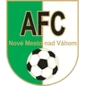
-
21. 3.ne · 12:30
Match dayFK VoderadyU15 · vonku · 14. kolo

-
21. 3.ne · 15:00
Match dayŠportový klub NaháčB-mužstvo · doma · 14. kolo

-
27. 3.so · 15:00
Match dayFC Nitra BA-mužstvo · vonku · 19. kolo

Z Instagramu
@slavojboleraz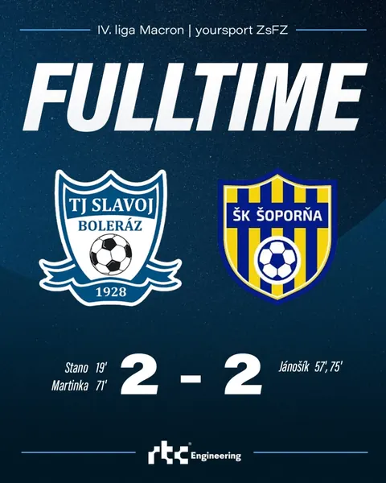
Posledný zápas v tomto roku skončil remízou 2-2. Góly strelili Dušan Stano a z priameho kopu sa presadil Daniel Martinka.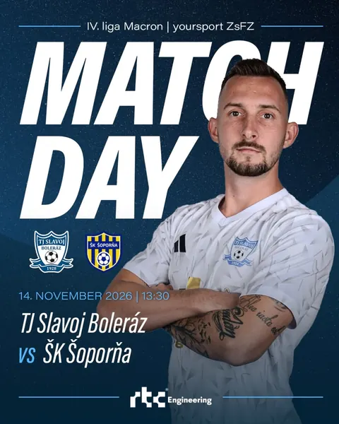
Dnes odohráme posledný zápas v tomto roku. Na našom ihrisku privítame o 13:30 Šoporňu.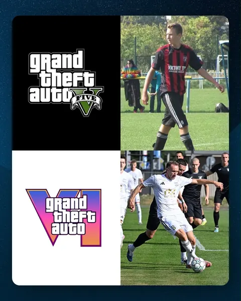
ČAS BEŽÍ RÝCHLO⏳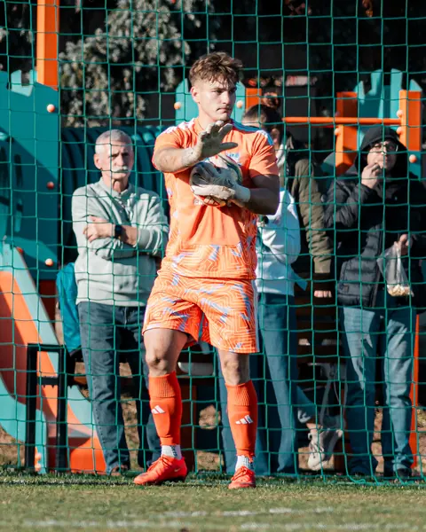
ZÁVER JESENE🍂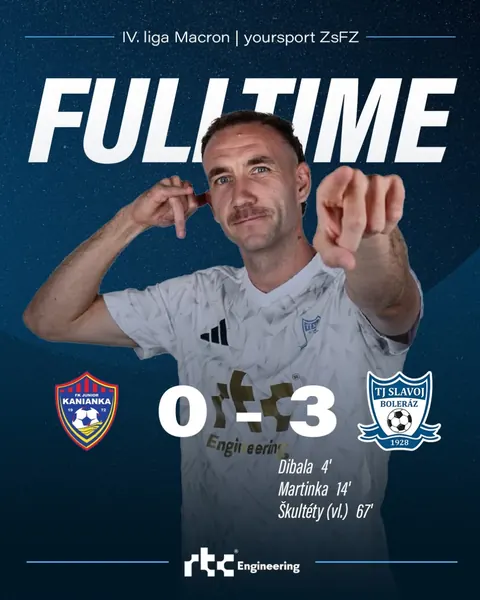
Deviata výhra v jesennej časti🔥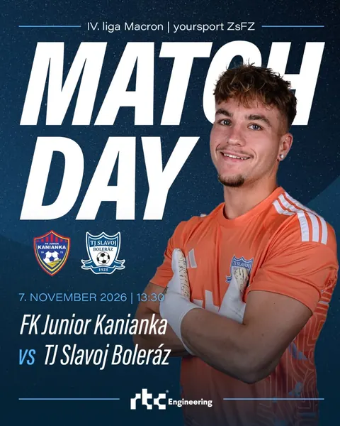
Dnes nás čaká posledný vonkajší zápas. O 13:30 nastúpime v Kanianke.
Videá
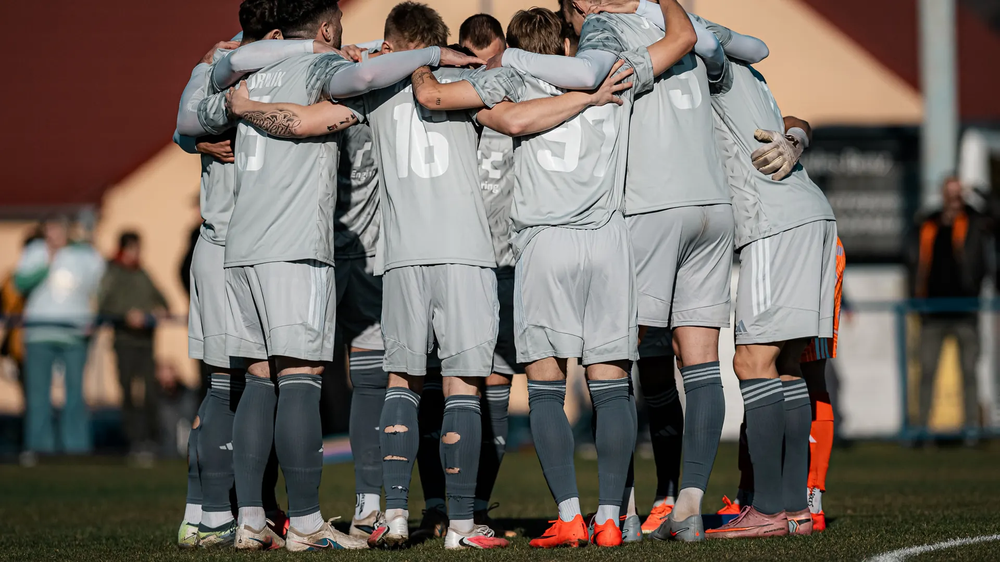
Od roku 1928
V roku 1928 sa futbal hrával už aj na provizórnom ihrisku pri kostole. Ferdinand Loskot, zámočnícky učeň, Ján Banci a Jozef Hluch – pekárski učni mali v tom čase bicykle a na nich navštevovali zápasy v Trnave. Zopár chlapcov sa zložilo na loptu a tak vzniklo prvé mužstvo..
- 1927Akcionári škrobárne si v areáli závodu zriadili tenisové ihrisko, približne vtedy začali technickí pracovníci hrať futbal.
- 1928Futbal sa hrá na provizórnom ihrisku pri kostole. Zopár chlapcov sa zložilo na loptu a vzniklo prvé mužstvo.
- 1929 – 30Z peňazí z podomových zbierok si hráči kúpili zeleno-biele dresy.
- 1932V tridsiatich stretnutiach 28 výhier.